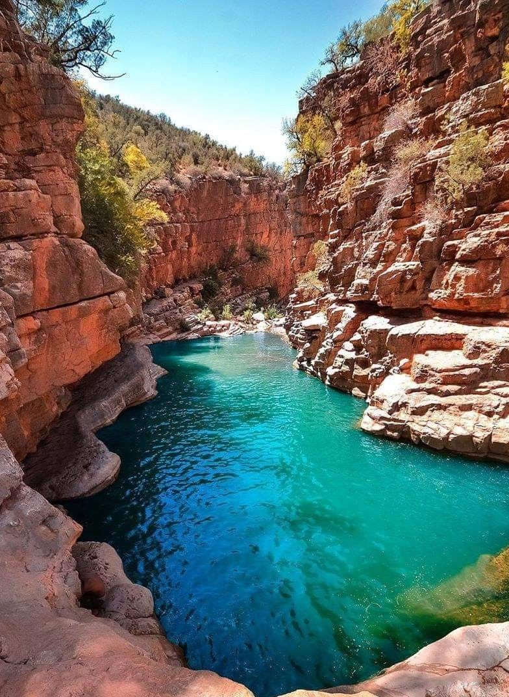
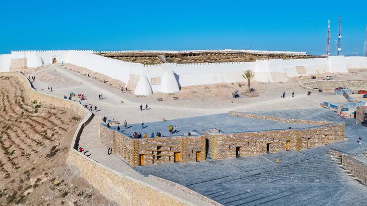
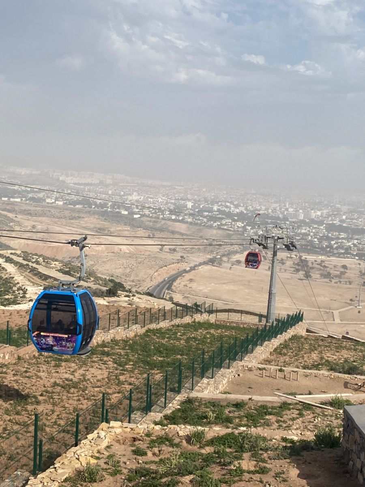
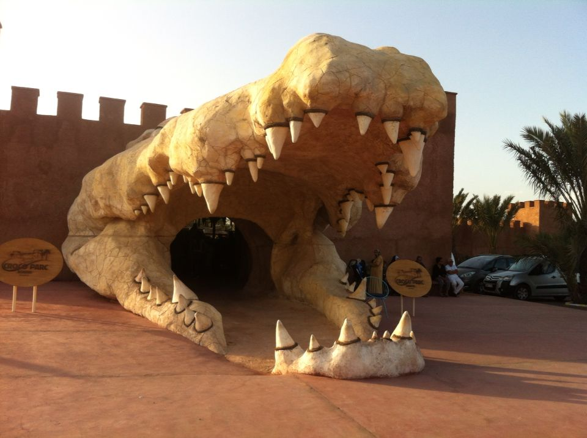

Activités touristiques
De la plage mythique aux sommets de l'Anti-Atlas, Agadir offre une diversité d'expériences inoubliables.
 Sport
Sport
Surf & Plage
Spot de surf renommé avec des vagues parfaites pour tous niveaux, de la baie d'Agadir à Taghazout.

NatureVallée du Paradis
Oasis luxuriante avec piscines naturelles, falaises spectaculaires et paysages verdoyants à 1h d'Agadir.

CultureKasbah d'Agadir Oufella
Forteresse historique du XVIe siècle dominant la baie — vue panoramique sur la ville et l'Atlantique.

SportTéléphérique
Unique au Maroc ! Montez en téléphérique jusqu'à la Kasbah pour une vue imprenable sur la baie d'Agadir.

NatureCrocoparc
Parc animalier unique au Maroc avec crocodiles du Nil, jardins exotiques tropicaux et aires de jeux.
 Culture
Culture
Médina Coco Polizzi
Médina artisanale reconstruite avec amour, ateliers d'artisans actifs et architecture traditionnelle berbère.